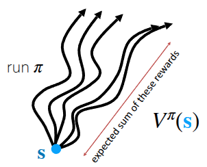
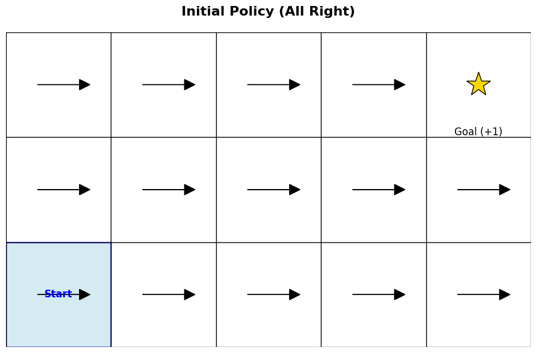

강의 및 자료


포스트에 소개되어 있는 자료는 강의 자료에서 따왔습니다.
Lecture Summary with NotebookLM
Recap
이번 포스트에서 다룰 내용에 대한 이해를 위해서 지난 강의까지 다뤘던 내용에 대해서 다시 살펴본다.


먼저 의사결정에 필요한 정보로써 강화학습에서는 주어진 상태에서 목표지점에 도달했을때 얻을수 있는 미래의 기대보상이라는 개념을 정의했다. 그래서 현재 상태 \(s\) 에서 policy \(\pi\) 를 따라 행동했을 때 받을 수 있는 미래의 기대 보상치를 (State) Value Function \(V\) (그림 1 (a)) 라고 표현하고, 수식으로는 다음과 같이 표현한다.
\[ V^{\pi}(s_t) = \sum_{t'=t}^T \mathbb{E}_{\pi_{\theta}}[r(s_{t'}, a_{t'}) \vert s_t] \]
한편으로는 현재 상태에서 어떤 행동 \(a\) 를 취했을 때에 대한 미래의 기대보상값도 Q-Function \(Q\) (혹은 State-Action Value Function) (그림 1 (b)) 라는 것을 사용하기도 한다.
\[ Q^{\pi}(s_t, a_t) = \sum_{t'=t}^T \mathbb{E}_{\pi_{\theta}}[r(s_{t'}, a_{t'}) \vert s_t, a_t] \tag{1}\]
이런 정보를 활용하여 이전 강의에서 다뤘던 (Online) RL 알고리즘으로 Policy Gradient와 Actor-Critic, 그리고 다른 정책이 쌓은 경험으로 학습시키는 Off-Policy Actor-Critic에 대해서 다뤘다.
\[ \nabla_{\theta}J(\theta) \approx \frac{1}{N} \sum_{i=1}^N \sum_{t=1}^T \nabla_{\theta} \log \pi_{\theta} (a_{i, t} \vert s_{i, t}) \Big( \Big(\sum_{t'=t}^T r(s_{i, t'}, a_{i, t'}) \Big) - b \Big) \tag{2}\]
먼저 다뤘던 Policy Gradient는 위의 방정식 2 에는 여러가지 trick이 반영되어 있지만, 전체 식의 의미는 기준점보다 좋은 trajectory에 대해서는 더 많이 수행하고, 기준점보다 나쁜 trajectory에선 덜 수행하는 방향으로 objective function의 gradient를 취하라는 의미였다. 여기에서 한단계 더 나아가 앞에서 언급한 value function들을 활용하여, 현재 상태 \(s\) 에서 어떤 행동 \(a\) 을 취했을때 얼마나 더 좋고 나쁜지를 계산하고, 이를 기반으로 policy를 학습하게 한 Actor-Critic 방식도 있었다.
\[ \nabla_{\theta} J(\theta) \approx \frac{1}{N} \sum_{i=1}^N \sum_{t=1}^T \nabla_{\theta} \log \pi_{\theta} (a_{i, t} \vert s_{i, t}) A^{\pi}(s_{i, t}, a_{i, t}) \]
사실 앞에서 소개한 Policy Gradient와 Actor-Critic 방식은 학습하는 policy와 실제로 action을 policy가 동일한 On-Policy 형태였고, 이 경우 현재 policy가 쌓은 데이터가 아니면 학습할때 버려야하는 sample inefficiency 문제가 대두되었기 때문에 이를 보완하기 위해 Replay Buffer를 사용한 Off-Policy Actor-Critic 에 대해서도 소개했다. 핵심은 replay buffer에서 샘플링한 이전의 경험 (\((s_i, a_i, s_i')\)) 과 현재의 policy로부터 뽑은 다음 상태에서의 action (\(\bar{a}'_i \sim \pi_{\theta}(\cdot \vert s_i')\)) 을 활용하여 Q를 추정한다는 것이다.
\[ Q^{\pi_{\theta}}(s_i, a_i) \approx r(s_i, a_i) + \gamma Q^{\pi_{\theta}}(s_i', \bar{a}_i') \]
결과적으로 Actor-Critic 방식은 현재 상태에 대한 가치를 평가하는 Critic 과 Critic에서 추정한 Value function으로 실제로 수행하는 Actor로 이뤄져 있고, 이 두개를 모두 학습했다. 그런데 상식적으로 Critic에서 추정된 Value function를 활용하는 방법도 있겠지만, 단순히 Q-function만 가지고도 주어진 상태에서의 최적의 행동을 뽑을 수 있지 않을까 하는 막연한 의문을 가질 수 있다. 바로 이 질문에서 Q-Learning에 대한 내용이 진행된다.
Value-based RL methods
앞서 제한 의문처럼, 만약 어떤 policy \(\pi\) 에 대한 정확한 \(Q^{\pi}(s, a)\) 를 알고 있다면, 굳이 별도의 Actor를 학습할 필요가 없을 것이다. 단순히 현재 상태에서 가장 높은 Q value를 가진 action을 취하는 것만으로도, 기존의 policy보다 더 낫거나 최소한 같은 성능을 내는 새로운 policy를 정의할 수 있기 때문이다. 앞의 방정식 1 에서 언급했던 Q function의 정의를 그대로 가져오면 현재의 policy \(\pi\) 를 따르는 상황에서 주어진 State \(s\) 에서 action \(a\) 를 취할 때 얻을 수 있는 미래의 기대보상값이므로, 위의 설명 그대로 다음과 같은 policy를 정의할 수 있을 것이다.
\[ \pi_{\text{new}}(a_t \vert s_t) = \begin{cases} 1 & \text{if } a_t = \arg \max_{a} Q_{\phi}(s_t, a) \\ 0 & \text{otherwise} \end{cases} \tag{3}\]
강의에서는 이에 대한 쉬운 이해를 위해서 강화학습에서 많이 활용되는 2D GridWorld 상에서 목적지를 찾는 과정에 대한 예시 (그림 2) 를 공유했다. 이 환경은 sparse reward로 되어 있어서, goal에 도달했을때만 reward를 1로 받고 나머지 케이스에 대해서는 reward를 받지 못하게끔 되어 있다. 참고로 쉬운 이해를 위해 일반적으로 표기되는 discount factor \(\gamma\) 는 1로 설정해, 미래에 받는 보상도 동일하게 취급하도록 했다.


우선 그림 2 (a) 은 학습이 되지 않은 상태에서의 현재 policy \(\pi\) 가 목적지까지 찾는 과정이다. 앞에서 정의한 방정식 3 대로 action을 취한다고 했을때, 현재의 Q-function은 update가 되지 않은 상태이므로, \(Q\) 를 최대화할 수 있는 action도 정의되지 않는다. 그렇기 때문에 임의로 오른쪽으로 가는 action만 취했다고 치자. (물론 시작점에서 목적지까지 도달하기 위해서는 오른쪽만 가는 action뿐만 아니라 위로 가는 action도 필요하다. 이때문에 강의에서 탐색(exploration)이 필요하다는 내용을 뒤에서 설명한다.) 이렇게 random하게 action을 취하다 보면 언젠가는 goal에 도달할 것이고, 그걸로 인해 우선 Q-function을 update할 수 있는 trajectory가 생성된다.
그림 2 (b) 는 이제 이전의 trajectory를 기반으로 \(Q\) 를 update하고 난 후, 각 State에서 취할 수 있는 action을 화살표로 표기한 것이다. 우선 맨 아래 줄은 Q값을 최대화할 수 있는 action이 오른쪽 (\(\rightarrow\)) 으로 가는 action만 정의되어 있는데, 이 action을 따라가는 경우에는 결국 goal에 도달하지 못한다. 그래서 맨 아래줄은 어떤 칸에서든 Q value가 0이다. 대신 두번째 줄부터는 \(Q\) 를 최대화할 수 있는 Action이 윗방향 (\(\uparrow\)) 로 정의되었고, 가장 윗줄에 도달하면 Q value를 최대화할 수 있는 action이 오른쪽 (\(\rightarrow\)) 으로 형성되므로, 앞에서 정의한 policy대로 따라가면 결국 goal에 도착하면서 reward를 받게 되는 것이다.
강의중 나온 질문 중에, 결과적으로 goal까지 도달할 수 있는 value function을 다시 계산하고, 해당 value를 기반으로 policy를 업데이트해야 이상적인 경로를 찾을 수 있지 않냐는 내용이 있었다. 사실 위의 예시에서도 알 수 있다시피, 이런 2D GridWorld같은 문제에서 이상적인 경로를 찾기 위한 policy를 정의하는 단계로 크게 두가지로 나눠서 볼 수 있다.
- Policy Evaluation: 현재 policy \(\pi\) 로 데이터를 수집하고, 이를 이용해 \(Q^{\pi}(s, a)\) 를 학습한다.
- Policy Improvement: 학습된 Q-fuction을 활용해 다음 state에서 가장 높은 Q를 얻을 수 있는 action을 선택할 수 있도록 policy를 update한다. (\(\pi \leftarrow \arg \max_a Q(s, a)\))
이렇게 Polciy Evaluation과 Policy Improvement가 반복적으로 수행되는 과정 자체를 Policy Iteration 이라고 표현을 한다. 교수는 해당 과정에 대해서 잠깐 설명하긴 했지만, 뒤에서 소개할 Q-Learning의 알고리즘을 보면, 이런 Policy Iteration 과정이 내부에 녹아져있다.

이렇게 update된 Value function을 활용하여 미래의 기대보상값을 추정하고, 이를 기반으로 policy를 update하는 일련의 과정은 앞의 과정에서 소개했던 Policy Gradient나 Actor-Critic Methods의 과정과 유사하다. 차이점이라면 action을 결정할 policy라는 게 이전에는 별도의 Actor (혹은 policy network) 이라는 객체로 정의되었다면, 앞에서 소개한 방정식 3 는 그런 것과 상관없이 현재 상태 \(s\) 에서 가장 높은 Q value를 뽑을 수 있는 action (\(\arg \max_a Q(s, a)\)) 만 찾으면 이 역시 주어진 환경에서 최적화된 policy를 찾게 될 것이다.
From Actor-Critic to Critic only
앞에서 말한 내용을 다시 정의해보면, 현재 state \(s\) 에서 어떤 action \(a\) 를 취했을 때의 value function \(Q(s, a)\) 만 정확하게 추정할 수 있으면 이상적인 policy를 찾을 수 있고, 이렇게 Q function 기반으로 policy를 학습하는 방식을 Q-Learning 이라고 설명하고 있다. (Algorithm 1)
Algorithm 1 에서도 앞에서 소개한 것처럼 현재의 value function을 계산하는 Policy Evaluation과 계산된 Value function을 활용해서 policy를 update하는 Policy Improvement가 반복적으로 수행되는 Policy Iteration이 들어있다. 이 과정을 무한히 반복하면, 이론적으로 optimal policy를 찾게 되지만, 사실 강의의 topic이기도 한 Deep RL에서는 이렇게 매번 policy evaluation과 improvement를 반복적으로 수행하는 것이 비효율적인 측면이 있다. 이때문에 Q function을 update하는 과정에서도 개선할 부분을 생각해볼 수 있다.
먼저 개선부분에 대한 이해를 위해서는 강화학습 이론에서 설명되는 Bellman Equation 에 대한 설명이 전제되어야 한다.
\[ Q^{\pi}(s, a) = r(s, a) + \gamma \mathbb{E}_{s' \sim p(\cdot \vert s, a), a' \sim \pi(\cdot \vert s')} [Q^{\pi}(s', a')] \quad \text{for all} (s, a) \]
Actor-Critic에서는 현재 policy Q value를 추정하기 위해서 next state의 기대 보상값을 활용했는데, 이를 Bellman Equation이라고 한다. 그런데 Q-Learning의 목표는 현재의 policy가 아니라 optimal policy \(\pi^*\) 에서의 Q value 인 \(Q^*(s, a)\) 를 직접 학습하는 것이다. 그런데 앞에서 설명한 바와 같이 \(\pi^{*}\) 는 항상 Q value가 최대가 되는 Action을 선택하는 특징을 가지고 있으므로, 위에서도 기대값 (\(\mathbb{E}\)) 이 아닌, 최대값 (\(\max\)) 로 대체할 수 있다.
\[ Q^{\pi^*} = r(s, a) + \gamma \mathbb{E}_{s' \sim p(\cdot \vert s, a)} [\max_{a'}Q^{\pi^*}(s', a')] \quad \text{for all} (s, a) \]
결과적으로 우리가 Q function이 주어진 next state \(s'\) 에서 취할 수 있는 next action \(a'\) 은 Q를 최대화시킬 수 있는 action이므로 이를 함수를 통해서 직접 구하는 형태로 변경된 것이다. 이렇게 optimal한 policy임을 가정하고 다시 정의한 bellman equation을 Bellman Optimality Equation 라고 한다. 이 모든 내용이 Q function을 활용해서 의사 결정을 할 수 있기 때문에 설명되는 것이다.
해당 내용을 바탕으로 앞에서 정의한 Q-Learning을 개선하면 다음과 같다.
이렇게 구한 \(Q^{\pi^*}\) 와 이를 기반으로 도출한 policy \(\pi^*\) 가 과연 optimal한가에 대해서도 강의에서 설명했는데, 위에서 제시한 2D GridWorld와 같이 모든 State와 Action에 대한 value 가 table 형태로 저장할 수 있는(tabular) 간단한 환경이라면 Algorithm 2 에서 정의한 방식대로 \(\pi^*\) 를 찾을 수 있다. 또한 State와 Action의 형태가 Discrete하고, 충분한 탐색(Exploration)과정이 동반되었을 때도 Optimal \(Q\) 를 찾을 수 있다고 설명하고 있다. 하지만 강의에서 다루는 Deep RL에서는 기본적으로 신경망을 통한 Value Function Approximation이 동반되는데, 이 경우는 항상 수렴을 보장하지 않는다고 부연으로 설명했다. 대신 Mnih 기타 (2013) 에서처럼 학습을 안정화시켜 게임이나 로봇 제어 등에서 인간을 뛰어넘는 성능을 내기도 한다.
강화학습의 Bible이라고 할 수 있는 Sutton 와/과 Barto (2018) 에서는 지금 설명하고 있는 Q-Learning 에 대한 설명을 먼저 한 후, 책의 뒷절에서 Approximate Solution Methods이란 절에서 Policy Gradient와 Actor-Critic Methods 를 설명하고 있고, 이는 현재의 강의의 진행방향과 조금 다르다. 아마 개인적인 생각이지만, Value function에서의 policy를 정의하는 방법을 설명한 후, 그럼 value function을 어떻게 추정하는지에 대해서 설명하고자 했던게 Sutton 와/과 Barto (2018) 에서 설명하려고 했던 내용이고, 강의의 의도는 신경망으로 value function을 추정하는 중요성을 부각시키기 위해서 첫 강의에서 소개한 Imitation Learning에서 이렇 게 Q-Learning까지 설명한 것 같다.
강의에 나온 질문중에 “왜 Value function (\(V\)) 가 아닌 Q-function (\(Q\)) 를 사용했는가?”에 대한 내용이 나오고 교수도 이에 대한 설명을 했다. 사실 \(V\) function이나 \(Q\) function 모두 미래의 기대 보상을 나타낸다는 점에서는 비슷하지만, **“함수로부터 action을 결정하는 과정”*에서 차이가 있다고 언급하고 있다.
만약 현재 State와 action에 대한 value function을 알 수 있다면, 앞에서 소개한 방정식 3 를 통해서, 별도의 복잡한 계산없이 최적의 action을 찾을 수 있다. 즉 \(Q\) Function을 통해서 어떤 action이 좋은지에 대한 정보를 이미 갖고 있는 셈이다. 이렇게 action을 결정하는 모델없이 value function을 통해서 action을 결정하는 방식을 model-free라고 표현한다.
반면, \(V(s)\) 를 사용하게 된다면 어떻게 될까? \(V(s)\) 에서는 주어진 State에 대한 가치만 알려줄 뿐, 그 State에서 어떤 행동을 해야 더 높은 가치를 가진 next state로 전이될지를 알려주지 않는다. 만약 우리가 보통 Oracle라고 표현하는 전지자가 되어서 환경의 변화에 대해서 완벽하게 예측하고, 미래의 state에 대한 value function을 정의할 수 있다면 좋겠지만, 이렇게 강화학습으로 적용하는 대부분의 문제들이 그런 Oracle이 되게끔 하는 환경의 물리법칙이나 변화 규칙(Dynamics)를 가지고 있지 않다. 이때문에 \(V\) 가 아닌, \(Q\) function을 사용해서 Q-Learning이라는 것을 하게 되는 것이다.
What kind of data should we collect?
Q-Learning의 장점이라고 할 수 있는 부분은 Off-Policy 라는 것이다. 앞의 Off-Policy Actor-Critic 부분에서 Soft Actor-Critic (SAC) 를 다룰때도 설명했던 내용이지만, 이 말은 현재의 policy가 쌓은 경험 (\((s, a, r, s')\)) 이 아니더라도, 다른 policy가 쌓은 경험을 토대로 value function을 update하고 이에 기반한 \(\pi^*\) 를 찾을 수 있다는 것이다. 물론 이 때 다른 policy는 보편적으로 학습된 policy가 아니라, 뭔가 다양한 state와 action에 대한 value를 표현할 수 있는, 쉽게 말해 이를 근사할 신경망에게 넣을 다양한 학습 데이터를 만들 exploration policy가 필요할 것이다. 가장 쉽게 생각해볼 수 있는 아이디어는 일정한 확률 (\(\epsilon\)) 로 임의의 action을 취하게 하는 것을 적용해볼 수 있는데, 이를 Epsilon-Greedy Exploration이라고 표현한다.
\[ \pi(a_t \vert s_t) = \begin{cases} 1 - \epsilon & \text{if } a_t = \arg \max_{a} Q_{\phi}(s_t, a) \\ \frac{\epsilon}{(\vert \mathcal{A} \vert - 1)} & \text{otherwise} \end{cases} \]
그래서 처음에는 높은 \(\epsilon\) 으로 정의해서 탐색을 하다가, 학습이 진행되는 시점에서는 Q function 에 따라 action을 취하게끔 \(\epsilon\) 을 감가시키는 방법으로 많이 사용된다. 혹은